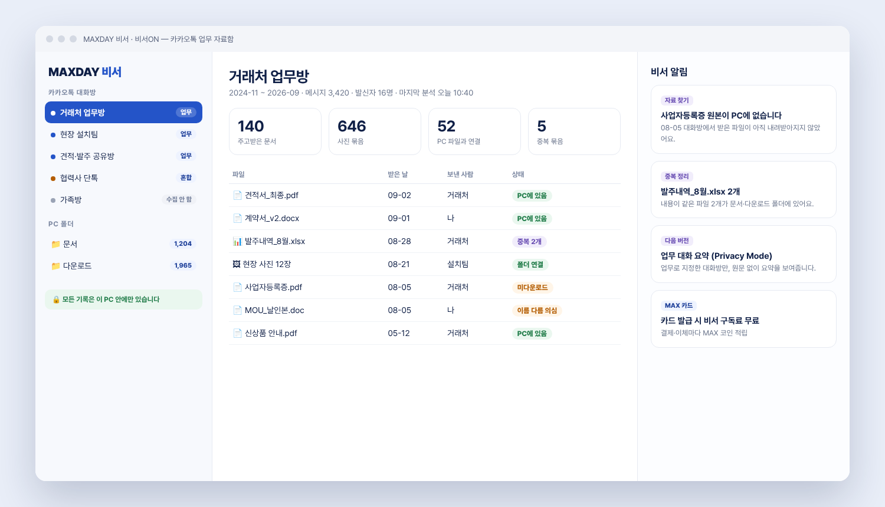
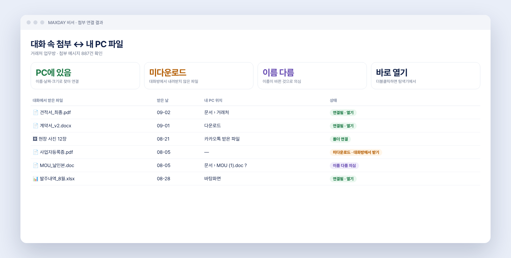
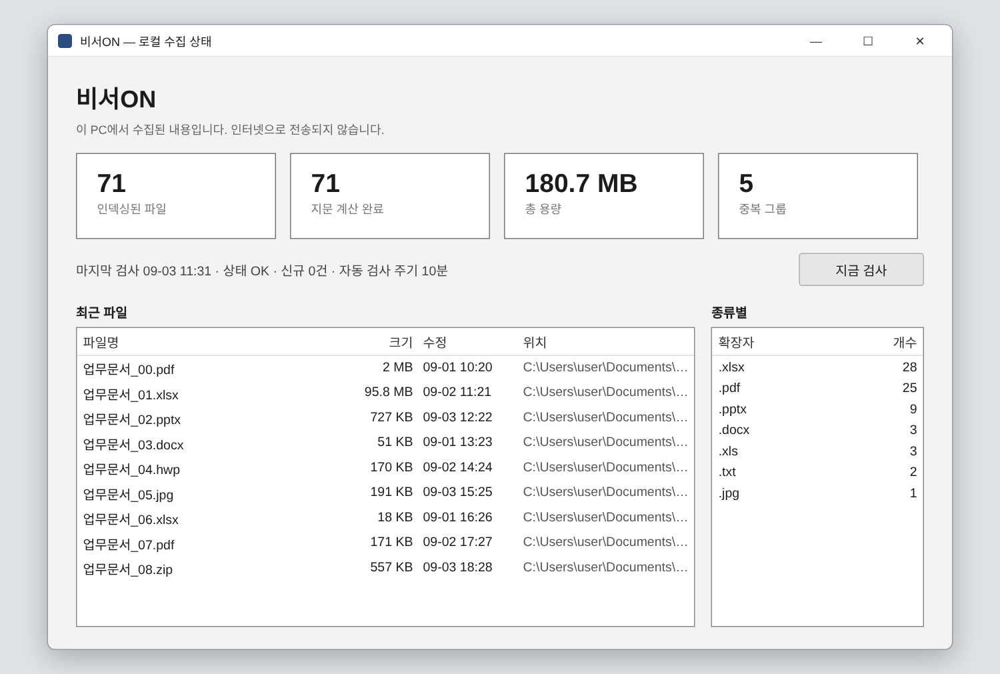
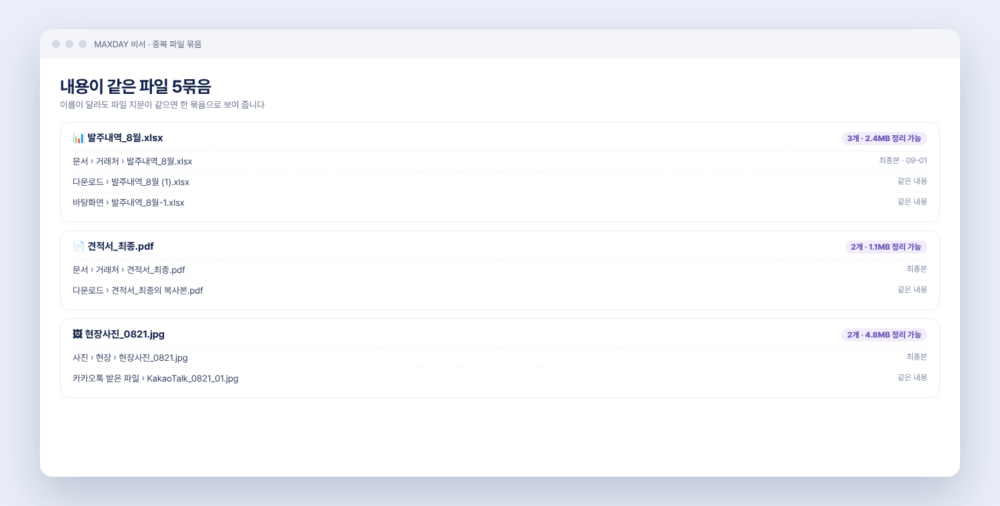
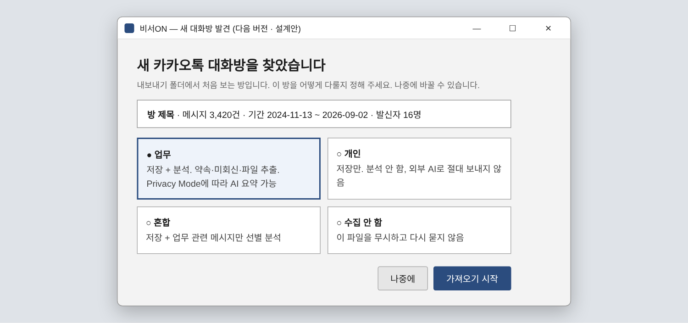
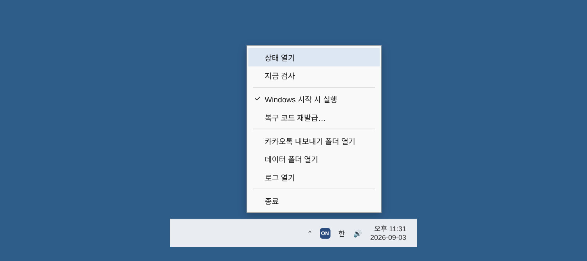

업무 대화가 메신저로 옮겨 오면서 자료는 대화방, 다운로드 폴더, 바탕화면에 흩어집니다. 찾는 데만 하루 몇십 분씩 쓰고 있습니다.
설치하고 폴더만 고르면, 이후는 비서가 알아서 합니다.
카카오톡의 ‘대화 내용 내보내기’ 파일을 넣으면 대화방에서 주고받은 문서·사진·영상·링크를 한곳에 모읍니다.

업무 자료함 화면 시안 · 예시 데이터대화에 등장한 파일이 내 PC 어디에 있는지 이름·날짜·크기로 찾아 연결합니다. 없는 파일은 따로 알려 드립니다.

첨부 연결 결과 화면 시안 · 예시 데이터문서·다운로드·사진·바탕화면 등 고른 폴더의 파일 목록을 정리해 보여 줍니다. 10분마다 바뀐 파일만 자동으로 다시 확인합니다.

실제 프로그램 화면 · 파일명은 예시로 대체이름이 달라도 내용이 같은 파일을 찾아 한 묶음으로 보여 줍니다. ‘복사본’, ‘(1)’ 같은 파일을 정리할 때 무엇을 지워도 되는지 바로 알 수 있습니다.

중복 파일 묶음 화면 시안 · 예시 데이터새 대화방을 찾으면 어떻게 다룰지 먼저 물어봅니다. 개인 대화는 처음부터 제외할 수 있습니다.

대화방 분류 화면 · 다음 버전 설계안평소에는 작업 표시줄 아이콘으로만 있습니다. 필요할 때 상태를 열고, 지금 검사하고, 언제든 멈출 수 있습니다.

실제 프로그램 화면견적서·세금계산서·사업자등록증을 거래처별 자료함에서 바로 찾습니다.
버전이 여러 개인 견적서 중 최종본과 받은 날짜를 한 번에 확인합니다.
대화방에 올라온 현장 사진을 날짜별로 묶고, 내려받지 않은 사진을 알려 줍니다.
클라이언트별로 받은 원고·시안·계약서를 대화방 단위로 정리합니다.
대화와 파일에는 거래처 정보와 개인 정보가 담겨 있습니다. MAXDAY 비서는 처음부터 ‘내 PC 안에서만’ 동작하도록 만들었습니다.
2026년 9월 사용자 PC 시험 결과입니다. 대화 원문·이름·연락처는 저장하거나 공개하지 않았습니다.